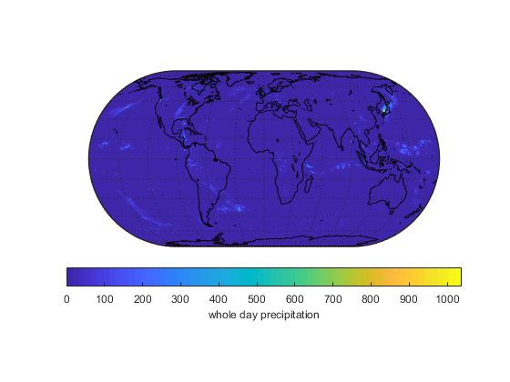

gpmFiles = dir('*.HDF5');
gpmCount = numel(gpmFiles);
R = georefcells();
R.LatitudeLimits = [-90, 90];
R.LongitudeLimits = [-180, 180];
R.RasterSize = [1800, 3600];
grid = zeros(1800, 3600);
for ii=1:gpmCount
gpmFileCurr=gpmFiles(ii);
ImergFileName=gpmFileCurr.name;
ImergYr_S=str2num(ImergFileName(22:25));
ImergMth_S=str2num(ImergFileName(26:27));
ImergDay_S=str2num(ImergFileName(28:29));
ImergHr_S=str2num(ImergFileName(32:33));
ImergMin_S=str2num(ImergFileName(34:35));
ImergSec_S=str2num(ImergFileName(36:37));
ImergStartTime=datenum(ImergYr_S,ImergMth_S, ImergDay_S, ImergHr_S, ImergMin_S, ImergSec_S);
ImergHr_E=str2num(ImergFileName(40:41));
ImergMin_E=str2num(ImergFileName(42:43));
ImergSec_E=str2num(ImergFileName(44:45));
ImergEndTime=datenum(ImergYr_S,ImergMth_S, ImergDay_S, ImergHr_E, ImergMin_E, ImergSec_E);
ImergLat = h5read(ImergFileName,'/Grid/lat');
ImergLon = h5read(ImergFileName,'/Grid/lon');
ImergPrec = h5read(ImergFileName,'/Grid/precipitationCal');
kk=find( (abs(ImergPrec) > 500) | (ImergPrec==0) );
ImergPrec(kk)= 0;
grid = grid + ImergPrec;
end
figure
axesm eckert4;
framem; gridm;
axis off
geoshow(grid, R , 'DisplayType', 'texturemap');
geoshow('landareas.shp', 'FaceColor', 'none', 'EdgeColor', 'white');
hcb = colorbar('southoutside');
set(get(hcb,'Xlabel'),'String','whole day precipitation')
